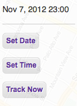

Use these controls to set the date and time of day displayed in the ShotClock.
Use the 'Track Now' button to resume displaying the current date and time of day.
 Use these controls to center the ShotClock and map on your current location or a location you search for.
Use these controls to center the ShotClock and map on your current location or a location you search for.
 The ShotClock displays the sun angle on the selected day and time with green and red indicating good and bad light.
The ShotClock displays the sun angle on the selected day and time with green and red indicating good and bad light.
click anywhere to continue